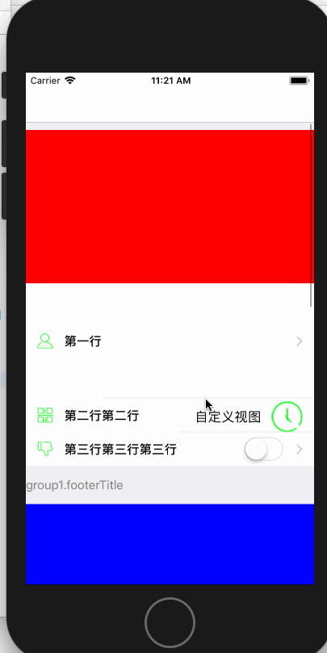
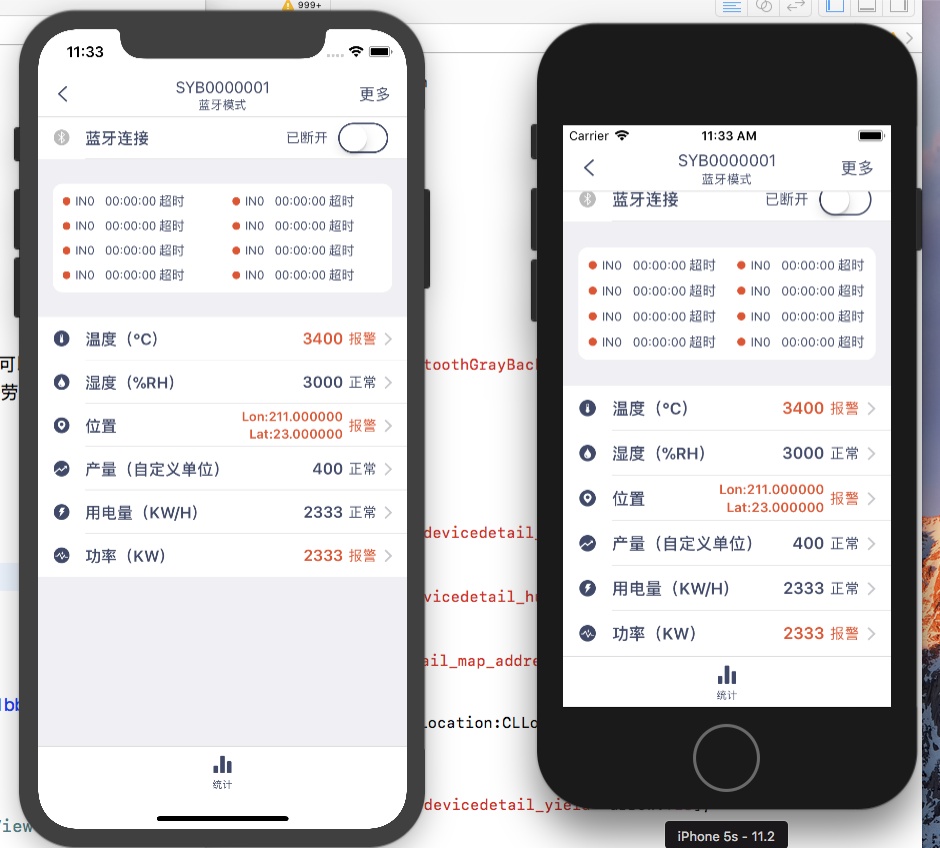
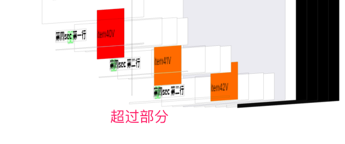
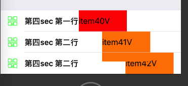

<!DOCTYPE html>


  


<html class="theme-next muse use-motion" lang="zh-Hans">
<head>
  <meta charset="UTF-8"/>
<meta http-equiv="X-UA-Compatible" content="IE=edge" />
<meta name="viewport" content="width=device-width, initial-scale=1, maximum-scale=1"/>
<meta name="theme-color" content="#222">


<meta http-equiv="Cache-Control" content="no-transform" />
<meta http-equiv="Cache-Control" content="no-siteapp" />


  
  
  <link href="/lib/fancybox/source/jquery.fancybox.css?v=2.1.5" rel="stylesheet" type="text/css" />


<link href="/lib/font-awesome/css/font-awesome.min.css?v=4.6.2" rel="stylesheet" type="text/css" />

<link href="/css/main.css?v=5.1.3" rel="stylesheet" type="text/css" />


  <link rel="apple-touch-icon" sizes="180x180" href="/images/apple-touch-icon-next.png?v=5.1.3">


  <link rel="icon" type="image/png" sizes="32x32" href="/assets/webImage/favicon.png?v=5.1.3">


  <link rel="icon" type="image/png" sizes="16x16" href="/assets/webImage/favicon.png?v=5.1.3">


  <link rel="mask-icon" href="/images/logo.svg?v=5.1.3" color="#222">


  <meta name="keywords" content="自造轮子,UITableView,UITableViewCell," />


<meta name="description" content="前言&amp;amp;效果由于写了太多次的设置界面、个人中心界面等，已经写到麻木。渐渐意识到，或许可以把这些类似的TableViewCell封装成一种，通过简单的方法去创建以及使用，这样就可以大大减少劳动力啦。然后我花了一下午的时间开始试着封装，下面是最终实现的效果： 实战效果最近公司采用了这个小轮子，下面是部分效果： 内部结构下面为内部文件： 至于内部的结构如何，我放部分代码你就会立马了解。123456">
<meta name="keywords" content="自造轮子,UITableView,UITableViewCell">
<meta property="og:type" content="article">
<meta property="og:title" content="自造轮子：表单视图，为所欲为">
<meta property="og:url" content="http://yoursite.com/2017/12/06/自造轮子：表单视图，为所欲为/index.html">
<meta property="og:site_name" content="Jabber_YQ&#39;s Blog">
<meta property="og:description" content="前言&amp;amp;效果由于写了太多次的设置界面、个人中心界面等，已经写到麻木。渐渐意识到，或许可以把这些类似的TableViewCell封装成一种，通过简单的方法去创建以及使用，这样就可以大大减少劳动力啦。然后我花了一下午的时间开始试着封装，下面是最终实现的效果： 实战效果最近公司采用了这个小轮子，下面是部分效果： 内部结构下面为内部文件： 至于内部的结构如何，我放部分代码你就会立马了解。123456">
<meta property="og:locale" content="zh-Hans">
<meta property="og:image" content="http://yoursite.com/2017/12/06/自造轮子：表单视图，为所欲为/效果动图.gif">
<meta property="og:image" content="http://yoursite.com/2017/12/06/自造轮子：表单视图，为所欲为/实战效果.png">
<meta property="og:image" content="http://upload-images.jianshu.io/upload_images/2312304-fa838b1bb68e27f5.png?imageMogr2/auto-orient/strip%7CimageView2/2/w/1240">
<meta property="og:image" content="http://upload-images.jianshu.io/upload_images/2312304-49611191b00d7dc8.png?imageMogr2/auto-orient/strip%7CimageView2/2/w/1240">
<meta property="og:image" content="http://upload-images.jianshu.io/upload_images/2312304-910bbccb83c89501.png?imageMogr2/auto-orient/strip%7CimageView2/2/w/1240">
<meta property="og:image" content="http://upload-images.jianshu.io/upload_images/2312304-098c53e2e24d6063.png?imageMogr2/auto-orient/strip%7CimageView2/2/w/1240">
<meta property="og:image" content="http://upload-images.jianshu.io/upload_images/2312304-47929e6a7ba12974.png?imageMogr2/auto-orient/strip%7CimageView2/2/w/1240">
<meta property="og:image" content="http://upload-images.jianshu.io/upload_images/2312304-fbde1a3ea247bfc4.png?imageMogr2/auto-orient/strip%7CimageView2/2/w/1240">
<meta property="og:image" content="http://upload-images.jianshu.io/upload_images/2312304-8d5a90da4855f7ce.png?imageMogr2/auto-orient/strip%7CimageView2/2/w/1240">
<meta property="og:image" content="http://upload-images.jianshu.io/upload_images/2312304-2b81a7e09d9a81e7.png?imageMogr2/auto-orient/strip%7CimageView2/2/w/1240">
<meta property="og:image" content="http://upload-images.jianshu.io/upload_images/2312304-68e7b3cdd0032b0b.png?imageMogr2/auto-orient/strip%7CimageView2/2/w/1240">
<meta property="og:image" content="http://upload-images.jianshu.io/upload_images/2312304-0bdd0d5014cb2827.png?imageMogr2/auto-orient/strip%7CimageView2/2/w/1240">
<meta property="og:image" content="http://upload-images.jianshu.io/upload_images/2312304-d1609958606c3dd8.png?imageMogr2/auto-orient/strip%7CimageView2/2/w/1240">
<meta property="og:image" content="http://upload-images.jianshu.io/upload_images/2312304-1623997e95e3ffad.png?imageMogr2/auto-orient/strip%7CimageView2/2/w/1240">
<meta property="og:image" content="http://upload-images.jianshu.io/upload_images/2312304-b194078bd4edfbfb.png?imageMogr2/auto-orient/strip%7CimageView2/2/w/1240">
<meta property="og:image" content="http://upload-images.jianshu.io/upload_images/2312304-34beabfab97356f6.png?imageMogr2/auto-orient/strip%7CimageView2/2/w/1240">
<meta property="og:image" content="http://upload-images.jianshu.io/upload_images/2312304-1922eba162a6ec39.png?imageMogr2/auto-orient/strip%7CimageView2/2/w/1240">
<meta property="og:image" content="http://upload-images.jianshu.io/upload_images/2312304-11dfd44388e43834.gif?imageMogr2/auto-orient/strip%7CimageView2/2/w/1240">
<meta property="og:image" content="http://yoursite.com/2017/12/06/自造轮子：表单视图，为所欲为/裁剪效果.png">
<meta property="og:image" content="http://yoursite.com/2017/12/06/自造轮子：表单视图，为所欲为/显示效果.png">
<meta property="og:updated_time" content="2017-12-25T03:35:18.000Z">
<meta name="twitter:card" content="summary">
<meta name="twitter:title" content="自造轮子：表单视图，为所欲为">
<meta name="twitter:description" content="前言&amp;amp;效果由于写了太多次的设置界面、个人中心界面等，已经写到麻木。渐渐意识到，或许可以把这些类似的TableViewCell封装成一种，通过简单的方法去创建以及使用，这样就可以大大减少劳动力啦。然后我花了一下午的时间开始试着封装，下面是最终实现的效果： 实战效果最近公司采用了这个小轮子，下面是部分效果： 内部结构下面为内部文件： 至于内部的结构如何，我放部分代码你就会立马了解。123456">
<meta name="twitter:image" content="http://yoursite.com/2017/12/06/自造轮子：表单视图，为所欲为/效果动图.gif">


<script type="text/javascript" id="hexo.configurations">
  var NexT = window.NexT || {};
  var CONFIG = {
    root: '/',
    scheme: 'Muse',
    version: '5.1.3',
    sidebar: {"position":"left","display":"post","offset":12,"b2t":false,"scrollpercent":false,"onmobile":false},
    fancybox: true,
    tabs: true,
    motion: {"enable":true,"async":false,"transition":{"post_block":"fadeIn","post_header":"slideDownIn","post_body":"slideDownIn","coll_header":"slideLeftIn","sidebar":"slideUpIn"}},
    duoshuo: {
      userId: '0',
      author: '博主'
    },
    algolia: {
      applicationID: '',
      apiKey: '',
      indexName: '',
      hits: {"per_page":10},
      labels: {"input_placeholder":"Search for Posts","hits_empty":"We didn't find any results for the search: ${query}","hits_stats":"${hits} results found in ${time} ms"}
    }
  };
</script>


  <link rel="canonical" href="http://yoursite.com/2017/12/06/自造轮子：表单视图，为所欲为/"/>


  <title>自造轮子：表单视图，为所欲为 | Jabber_YQ's Blog</title>
  


</head>

<body itemscope itemtype="http://schema.org/WebPage" lang="zh-Hans">

  
  
    
  

  <div class="container sidebar-position-left page-post-detail">
    <div class="headband"></div>

    <header id="header" class="header" itemscope itemtype="http://schema.org/WPHeader">
      <div class="header-inner"><div class="site-brand-wrapper">
  <div class="site-meta ">
    

    <div class="custom-logo-site-title">
      <a href="/"  class="brand" rel="start">
        <span class="logo-line-before"><i></i></span>
        <span class="site-title">Jabber_YQ's Blog</span>
        <span class="logo-line-after"><i></i></span>
      </a>
    </div>
      
        <p class="site-subtitle">不会一切重启不能解决的问题</p>
      
  </div>

  <div class="site-nav-toggle">
    <button>
      <span class="btn-bar"></span>
      <span class="btn-bar"></span>
      <span class="btn-bar"></span>
    </button>
  </div>
</div>

<nav class="site-nav">
  

  
    <ul id="menu" class="menu">
      
        
        <li class="menu-item menu-item-home">
          <a href="/" rel="section">
            
              <i class="menu-item-icon fa fa-fw fa-home"></i> <br />
            
            首页
          </a>
        </li>
      
        
        <li class="menu-item menu-item-tags">
          <a href="/tags" rel="section">
            
              <i class="menu-item-icon fa fa-fw fa-tags"></i> <br />
            
            标签
          </a>
        </li>
      
        
        <li class="menu-item menu-item-categories">
          <a href="/categories" rel="section">
            
              <i class="menu-item-icon fa fa-fw fa-th"></i> <br />
            
            分类
          </a>
        </li>
      
        
        <li class="menu-item menu-item-archives">
          <a href="/archives/" rel="section">
            
              <i class="menu-item-icon fa fa-fw fa-archive"></i> <br />
            
            归档
          </a>
        </li>
      

      
    </ul>
  

  
</nav>


 </div>
    </header>

    <main id="main" class="main">
      <div class="main-inner">
        <div class="content-wrap">
          <div id="content" class="content">
            

  <div id="posts" class="posts-expand">
    

  

  
  
  

  <article class="post post-type-normal" itemscope itemtype="http://schema.org/Article">
  
  
  
  <div class="post-block">
    <link itemprop="mainEntityOfPage" href="http://yoursite.com/2017/12/06/自造轮子：表单视图，为所欲为/">

    <span hidden itemprop="author" itemscope itemtype="http://schema.org/Person">
      <meta itemprop="name" content="Jabber_YQ">
      <meta itemprop="description" content="">
      <meta itemprop="image" content="/assets/webImage/avatar.jpg">
    </span>

    <span hidden itemprop="publisher" itemscope itemtype="http://schema.org/Organization">
      <meta itemprop="name" content="Jabber_YQ's Blog">
    </span>

    
      <header class="post-header">

        
        
          <h1 class="post-title" itemprop="name headline">自造轮子：表单视图，为所欲为</h1>
        

        <div class="post-meta">
          <span class="post-time">
            
              <span class="post-meta-item-icon">
                <i class="fa fa-calendar-o"></i>
              </span>
              
                <span class="post-meta-item-text">发表于</span>
              
              <time title="创建于" itemprop="dateCreated datePublished" datetime="2017-12-06T00:00:00+08:00">
                2017-12-06
              </time>
            

            

            
          </span>

          
            <span class="post-category" >
            
              <span class="post-meta-divider">|</span>
            
              <span class="post-meta-item-icon">
                <i class="fa fa-folder-o"></i>
              </span>
              
                <span class="post-meta-item-text">分类于</span>
              
              
                <span itemprop="about" itemscope itemtype="http://schema.org/Thing">
                  <a href="/categories/自造轮子/" itemprop="url" rel="index">
                    <span itemprop="name">自造轮子</span>
                  </a>
                </span>

                
                
              
            </span>
          

          
            
              <span class="post-comments-count">
                <span class="post-meta-divider">|</span>
                <span class="post-meta-item-icon">
                  <i class="fa fa-comment-o"></i>
                </span>
                <a href="/2017/12/06/自造轮子：表单视图，为所欲为/#comments" itemprop="discussionUrl">
                  <span class="post-comments-count valine-comment-count" data-xid="/2017/12/06/自造轮子：表单视图，为所欲为/" itemprop="commentCount"></span>
                </a>
              </span>
            
          

          
          

          

          

          

        </div>
      </header>
    

    
    
    
    <div class="post-body" itemprop="articleBody">

      
      

      
        <h1 id="前言-amp-效果"><a href="#前言-amp-效果" class="headerlink" title="前言&amp;效果"></a>前言&amp;效果</h1><p>由于写了太多次的设置界面、个人中心界面等，已经写到麻木。渐渐意识到，或许可以把这些类似的TableViewCell封装成一种，通过简单的方法去创建以及使用，这样就可以大大减少劳动力啦。<br>然后我花了一下午的时间开始试着封装，下面是最终实现的效果：<br></p>
<h1 id="实战效果"><a href="#实战效果" class="headerlink" title="实战效果"></a>实战效果</h1><p>最近公司采用了这个小轮子，下面是部分效果：<br></p>
<h1 id="内部结构"><a href="#内部结构" class="headerlink" title="内部结构"></a>内部结构</h1><p>下面为内部文件：<br></p>
<p>至于内部的结构如何，我放部分代码你就会立马了解。<br><figure class="highlight plain"><table><tr><td class="gutter"><pre><span class="line">1</span><br><span class="line">2</span><br><span class="line">3</span><br><span class="line">4</span><br><span class="line">5</span><br><span class="line">6</span><br><span class="line">7</span><br><span class="line">8</span><br><span class="line">9</span><br><span class="line">10</span><br><span class="line">11</span><br><span class="line">12</span><br><span class="line">13</span><br><span class="line">14</span><br><span class="line">15</span><br><span class="line">16</span><br><span class="line">17</span><br><span class="line">18</span><br></pre></td><td class="code"><pre><span class="line">- (NSInteger)numberOfSectionsInTableView:(UITableView *)tableView</span><br><span class="line">&#123;</span><br><span class="line">    return self.groups.count;</span><br><span class="line">&#125;</span><br><span class="line"></span><br><span class="line">- (NSInteger)tableView:(UITableView *)tableView numberOfRowsInSection:(NSInteger)section</span><br><span class="line">&#123;</span><br><span class="line">    YQCommonGroup *group = self.groups[section];</span><br><span class="line">    return group.items.count;</span><br><span class="line">&#125;</span><br><span class="line"></span><br><span class="line">- (UITableViewCell *)tableView:(UITableView *)tableView cellForRowAtIndexPath:(NSIndexPath *)indexPath</span><br><span class="line">&#123;</span><br><span class="line">    YQCommonCell *cell = [YQCommonCell cellWithTableView:tableView];</span><br><span class="line">    YQCommonGroup *group = self.groups[indexPath.section];</span><br><span class="line">    cell.item = group.items[indexPath.row];</span><br><span class="line">    return cell;</span><br><span class="line">&#125;</span><br></pre></td></tr></table></figure></p>
<p>上述代码中，groups为ViewController的属性：<br><code>@property (nonatomic, strong) NSMutableArray *groups;</code><br>groups数组中存放一个个YQCommonGroup对象。<br>YQCommonGroup头文件如下：<br><br>YQCommonGroup对象有items属性，items内部放</p>
<p>以下面的图为例：<br></p>
<p>上图ViewController有groups属性，里面存在两个Groups对象，也就是说，对应的tableview有两个Section。<br>Groups对象1有一个items属性，items由item1和item2组成，也就是说，对应第一个Section有两行。而每一行的数据以及内部组件排布，都由item来决定。<br>emmm，婆婆妈妈终于把结构关系说清楚了。</p>
<h1 id="创建groups"><a href="#创建groups" class="headerlink" title="创建groups"></a>创建groups</h1><p>如果闲麻烦，也可以通过懒加载的方式去创建groups。下面为我这个demo的数据源数据：<br><figure class="highlight plain"><table><tr><td class="gutter"><pre><span class="line">1</span><br><span class="line">2</span><br><span class="line">3</span><br><span class="line">4</span><br><span class="line">5</span><br><span class="line">6</span><br><span class="line">7</span><br><span class="line">8</span><br><span class="line">9</span><br><span class="line">10</span><br><span class="line">11</span><br><span class="line">12</span><br><span class="line">13</span><br><span class="line">14</span><br><span class="line">15</span><br><span class="line">16</span><br><span class="line">17</span><br><span class="line">18</span><br><span class="line">19</span><br><span class="line">20</span><br><span class="line">21</span><br><span class="line">22</span><br><span class="line">23</span><br><span class="line">24</span><br><span class="line">25</span><br><span class="line">26</span><br><span class="line">27</span><br><span class="line">28</span><br><span class="line">29</span><br><span class="line">30</span><br><span class="line">31</span><br><span class="line">32</span><br><span class="line">33</span><br><span class="line">34</span><br><span class="line">35</span><br><span class="line">36</span><br><span class="line">37</span><br><span class="line">38</span><br><span class="line">39</span><br><span class="line">40</span><br><span class="line">41</span><br><span class="line">42</span><br><span class="line">43</span><br><span class="line">44</span><br><span class="line">45</span><br><span class="line">46</span><br><span class="line">47</span><br><span class="line">48</span><br><span class="line">49</span><br><span class="line">50</span><br><span class="line">51</span><br><span class="line">52</span><br><span class="line">53</span><br></pre></td><td class="code"><pre><span class="line">- (NSMutableArray *)groups</span><br><span class="line">&#123;</span><br><span class="line">    if (_groups == nil) &#123;</span><br><span class="line">        _groups = [NSMutableArray array];</span><br><span class="line"></span><br><span class="line">        YQCommonGroup *group = [[YQCommonGroup alloc] init];</span><br><span class="line"></span><br><span class="line">        YQCommonItem *item1 = [YQCommonItem itemWithTitle:@&quot;第一行&quot; icon:@&quot;0&quot; arrow:YES screenSeparator:YES];</span><br><span class="line">        item1.badgeValue = @&quot;2&quot;;</span><br><span class="line">        item1.assistLabelText = @&quot;第一行第一行&quot;;</span><br><span class="line">        item1.operation = ^&#123;</span><br><span class="line"></span><br><span class="line">        &#125;;</span><br><span class="line"></span><br><span class="line">        YQCommonItem *item2 = [YQCommonItem itemWithTitle:@&quot;第二行第二行&quot; icon:@&quot;1&quot; arrow:YES screenSeparator:YES];</span><br><span class="line">        item2.assistLabelText = @&quot;第二行第二行第二行第二行第二行第二行第二行第二行第二行第二行第二行第二行&quot;;</span><br><span class="line">        item2.operation = ^&#123;</span><br><span class="line"></span><br><span class="line">        &#125;;</span><br><span class="line"></span><br><span class="line">        YQCommonItem *item3 = [YQCommonItem itemWithTitle:@&quot;第三行第三行第三行&quot; icon:@&quot;2&quot; arrow:YES screenSeparator:YES];</span><br><span class="line">        item3.iconWidth = 30;</span><br><span class="line">        item3.assistFieldPlaceholderText = @&quot;第三行第三行&quot;;</span><br><span class="line">        item3.operation = ^&#123;</span><br><span class="line"></span><br><span class="line">        &#125;;</span><br><span class="line"></span><br><span class="line">        YQCommonItem *item4 = [YQCommonItem itemWithTitle:@&quot;第四行&quot; icon:@&quot;3&quot; arrow:YES screenSeparator:YES];</span><br><span class="line">        item4.assistImageURLStr = @&quot;https://ss0.baidu.com/73F1bjeh1BF3odCf/it/u=2953611372,3247682668&amp;fm=85&amp;s=DCE02CC4015325CA441C3C3903001040&quot;;</span><br><span class="line">        item4.destVcClass = [ViewController class];</span><br><span class="line"></span><br><span class="line">        YQCommonItem *item5 = [YQCommonItem itemWithTitle:@&quot;第五行&quot; icon:@&quot;2&quot; arrow:NO screenSeparator:YES];</span><br><span class="line">        item5.iconWidth = 100;</span><br><span class="line">        item5.assistLabelText = @&quot;第五行第五行&quot;;</span><br><span class="line">        item5.operation = ^&#123;</span><br><span class="line">            NSLog(@&quot;--&quot;);</span><br><span class="line">        &#125;;</span><br><span class="line"></span><br><span class="line">        YQCommonItem *item6 = [YQCommonItem itemWithTitle:@&quot;第六行&quot; icon:@&quot;2&quot; arrow:NO screenSeparator:YES];</span><br><span class="line">        item6.assistImageFileStr = @&quot;2&quot;;</span><br><span class="line">        item6.assistImageWidth = 60;</span><br><span class="line">        item6.assistImageCornerRadius = 30;</span><br><span class="line">        item6.operation = ^&#123;</span><br><span class="line"></span><br><span class="line">        &#125;;</span><br><span class="line"></span><br><span class="line">        group.items = @[item1, item2, item3, item4, item5, item6, item1, item2, item3, item4, item5, item6];</span><br><span class="line"></span><br><span class="line">        [_groups addObject:group];</span><br><span class="line">        [_groups addObject:group];</span><br><span class="line">    &#125;</span><br><span class="line">    return _groups;</span><br><span class="line">&#125;</span><br></pre></td></tr></table></figure></p>
<p>可以看到，我为了凸显功能繁多，设置的乱七八糟了。。。<br>如果对于这些item属性有疑惑，请继续往下看。</p>
<h1 id="item能做的功能"><a href="#item能做的功能" class="headerlink" title="item能做的功能"></a>item能做的功能</h1><h2 id="一、公开属性："><a href="#一、公开属性：" class="headerlink" title="一、公开属性："></a>一、公开属性：</h2><p>下面为item的公开属性<br><figure class="highlight plain"><table><tr><td class="gutter"><pre><span class="line">1</span><br><span class="line">2</span><br><span class="line">3</span><br><span class="line">4</span><br><span class="line">5</span><br><span class="line">6</span><br><span class="line">7</span><br><span class="line">8</span><br><span class="line">9</span><br><span class="line">10</span><br><span class="line">11</span><br><span class="line">12</span><br><span class="line">13</span><br><span class="line">14</span><br><span class="line">15</span><br><span class="line">16</span><br><span class="line">17</span><br><span class="line">18</span><br><span class="line">19</span><br><span class="line">20</span><br><span class="line">21</span><br><span class="line">22</span><br><span class="line">23</span><br><span class="line">24</span><br><span class="line">25</span><br><span class="line">26</span><br><span class="line">27</span><br><span class="line">28</span><br><span class="line">29</span><br><span class="line">30</span><br><span class="line">31</span><br><span class="line">32</span><br><span class="line">33</span><br><span class="line">34</span><br><span class="line">35</span><br><span class="line">36</span><br><span class="line">37</span><br><span class="line">38</span><br><span class="line">39</span><br><span class="line">40</span><br><span class="line">41</span><br><span class="line">42</span><br><span class="line">43</span><br></pre></td><td class="code"><pre><span class="line">/************************************ cell 数据源 *************************************/</span><br><span class="line">/** 图标 */</span><br><span class="line">@property (nonatomic, copy) NSString *icon;</span><br><span class="line">/** 标题 */</span><br><span class="line">@property (nonatomic, copy) NSString *title;</span><br><span class="line">/** 是否有箭头 默认为NO */</span><br><span class="line">@property (nonatomic, assign, getter=isArrow) BOOL arrow;</span><br><span class="line">/** 是否有全屏的分割线 默认为NO */</span><br><span class="line">@property (nonatomic, assign, getter=isScreenSeparator) BOOL screenSeparator;</span><br><span class="line">/** 辅助图片本地Str */</span><br><span class="line">@property (nonatomic, copy) NSString *assistImageFileStr;</span><br><span class="line">/** 辅助图片网络Str */</span><br><span class="line">@property (nonatomic, copy) NSString *assistImageURLStr;</span><br><span class="line">/** 辅助信息 */</span><br><span class="line">@property (nonatomic, copy) NSString *assistLabelText;</span><br><span class="line">/* assistFieldText 与 assistFieldPlaceholderText 的区别在于前者为field.text属性 后者为field.placeholder属性 */</span><br><span class="line">/** 辅助textField */</span><br><span class="line">@property (nonatomic, copy) NSString *assistFieldText;</span><br><span class="line">/** 辅助textField 的 placeholder */</span><br><span class="line">@property (nonatomic, copy) NSString *assistFieldPlaceholderText;</span><br><span class="line">/** 右边显示的数字标记 */</span><br><span class="line">@property (nonatomic, copy) NSString *badgeValue;</span><br><span class="line">/** block 只能用 copy */</span><br><span class="line">@property (nonatomic, copy) void (^operation)(void);</span><br><span class="line">/** 点击这行cell需要跳转到哪个控制器 */</span><br><span class="line">@property (nonatomic, assign) Class destVcClass;</span><br><span class="line"></span><br><span class="line">/************************************ cell 内部控件配置 *************************************/</span><br><span class="line"></span><br><span class="line">/** 图标大小 默认系统大小 */</span><br><span class="line">@property (nonatomic, assign) CGFloat iconWidth;</span><br><span class="line">/** 辅助图像大小 默认30 */</span><br><span class="line">@property (nonatomic, assign) CGFloat assistImageWidth;</span><br><span class="line">/** 辅助图像圆角化 默认不处理 */</span><br><span class="line">@property (nonatomic, assign) CGFloat assistImageCornerRadius;</span><br><span class="line">/** 标题字体大小 默认16 */</span><br><span class="line">@property (nonatomic, strong) UIFont *titleLableFont;</span><br><span class="line">/** 标题颜色 默认黑色 */</span><br><span class="line">@property (nonatomic, strong) UIColor *titleLableColor;</span><br><span class="line">/** 辅助字体大小 默认15 */</span><br><span class="line">@property (nonatomic, strong) UIFont *assistLabelFont;</span><br><span class="line">/** 辅助颜色 默认grayColor */</span><br><span class="line">@property (nonatomic, strong) UIColor *assistLabelColor;</span><br></pre></td></tr></table></figure></p>
<h2 id="二、能做的："><a href="#二、能做的：" class="headerlink" title="二、能做的："></a>二、能做的：</h2><h3 id="基础功能："><a href="#基础功能：" class="headerlink" title="基础功能："></a>基础功能：</h3><p>1.设置图标 <code>NSString *icon;</code><br>2.设置标题<code>NSString *title;</code><br>3.设置是否有箭头 默认为NO <code>BOOL arrow</code><br>4.设置cell底部是否有全屏的分割线 默认为NO<code>BOOL screenSeparator</code><br>5.设置提醒红点 <code>NSString *badgeValue;</code></p>
<h3 id="添加辅助控件功能："><a href="#添加辅助控件功能：" class="headerlink" title="添加辅助控件功能："></a>添加辅助控件功能：</h3><p>1.添加一个UILabel并设置文字 <code>NSString *assistLabelText;</code><br>2.添加一个Field并设置文字 <code>NSString *assistFieldText;</code><br>3.添加一个Field并设置提示字 <code>NSString *assistFieldPlaceholderText;</code><br>4.添加一个imageView，图片来自本地 <code>NSString *assistImageFileStr;</code><br>5.添加一个imageView，图片来自网络 <code>NSString *assistImageURLStr;</code></p>
<h3 id="设置部分控件样式"><a href="#设置部分控件样式" class="headerlink" title="设置部分控件样式"></a>设置部分控件样式</h3><p>1.图标大小 默认系统大小 <code>CGFloat iconWidth;</code><br>2.辅助图像大小 默认30宽 <code>CGFloat assistImageWidth;</code><br>3.辅助图像圆角化 默认不处理 <code>assistImageCornerRadius</code><br>4.标题字体大小 默认加粗16<code>UIFont *titleLableFont;</code><br>5.标题颜色 默认黑色<code>UIColor *titleLableColor;</code><br>6.辅助字体大小 默认15<code>UIFont *assistLabelFont;</code><br>7.辅助颜色 默认grayColor<code>UIColor *assistLabelColor;</code></p>
<h3 id="响应属性"><a href="#响应属性" class="headerlink" title="响应属性"></a>响应属性</h3><p>1.点击cell会调用 <code>void (^operation)(void);</code><br>2.为了方便，如果只是简单跳转，可以设置目的控制器类而不需要设置operation <code>Class destVcClass;</code></p>
<h2 id="三、初始化类方法"><a href="#三、初始化类方法" class="headerlink" title="三、初始化类方法"></a>三、初始化类方法</h2><p>下面为提供的简单初始化类方法：<br><figure class="highlight plain"><table><tr><td class="gutter"><pre><span class="line">1</span><br><span class="line">2</span><br><span class="line">3</span><br><span class="line">4</span><br><span class="line">5</span><br><span class="line">6</span><br><span class="line">7</span><br><span class="line">8</span><br><span class="line">9</span><br><span class="line">10</span><br><span class="line">11</span><br><span class="line">12</span><br><span class="line">13</span><br><span class="line">14</span><br><span class="line">15</span><br><span class="line">16</span><br><span class="line">17</span><br><span class="line">18</span><br><span class="line">19</span><br><span class="line">20</span><br><span class="line">21</span><br><span class="line">22</span><br><span class="line">23</span><br><span class="line">24</span><br><span class="line">25</span><br><span class="line">26</span><br><span class="line">27</span><br><span class="line">28</span><br><span class="line">29</span><br><span class="line">30</span><br><span class="line">31</span><br></pre></td><td class="code"><pre><span class="line">/**</span><br><span class="line">初始化一个item</span><br><span class="line"></span><br><span class="line">@param title 标题</span><br><span class="line">@param icon 图标</span><br><span class="line">@return item</span><br><span class="line">*/</span><br><span class="line">+ (instancetype)itemWithTitle:(NSString *)title icon:(NSString *)icon;</span><br><span class="line"></span><br><span class="line"></span><br><span class="line">/**</span><br><span class="line">初始化一个item</span><br><span class="line"></span><br><span class="line">@param title 标题</span><br><span class="line">@param icon 图标</span><br><span class="line">@param arrow 是否存在跳转箭头</span><br><span class="line">@return item</span><br><span class="line">*/</span><br><span class="line">+ (instancetype)itemWithTitle:(NSString *)title icon:(NSString *)icon arrow:(BOOL)arrow;</span><br><span class="line"></span><br><span class="line"></span><br><span class="line">/**</span><br><span class="line">初始化一个item</span><br><span class="line"></span><br><span class="line">@param title 标题</span><br><span class="line">@param icon 图标</span><br><span class="line">@param arrow 是否存在跳转箭头</span><br><span class="line">@param screenSeparator 是否有全屏分割线</span><br><span class="line">@return item</span><br><span class="line">*/</span><br><span class="line">+ (instancetype)itemWithTitle:(NSString *)title icon:(NSString *)icon arrow:(BOOL)arrow screenSeparator:(BOOL)screenSeparator;</span><br></pre></td></tr></table></figure></p>
<h2 id="四、具体举例："><a href="#四、具体举例：" class="headerlink" title="四、具体举例："></a>四、具体举例：</h2><h3 id="A"><a href="#A" class="headerlink" title="A"></a>A</h3><p><br><figure class="highlight plain"><table><tr><td class="gutter"><pre><span class="line">1</span><br><span class="line">2</span><br><span class="line">3</span><br><span class="line">4</span><br><span class="line">5</span><br></pre></td><td class="code"><pre><span class="line">YQCommonItem *item1 = [YQCommonItem itemWithTitle:@&quot;第一行&quot; icon:@&quot;0&quot; arrow:YES screenSeparator:YES];</span><br><span class="line">item1.badgeValue = @&quot;2&quot;; item1.assistLabelText = @&quot;第一行第一行&quot;;</span><br><span class="line">item1.operation = ^&#123;</span><br><span class="line"></span><br><span class="line">&#125;;</span><br></pre></td></tr></table></figure></p>
<h3 id="B"><a href="#B" class="headerlink" title="B"></a>B</h3><p><br><figure class="highlight plain"><table><tr><td class="gutter"><pre><span class="line">1</span><br><span class="line">2</span><br><span class="line">3</span><br></pre></td><td class="code"><pre><span class="line">YQCommonItem *item4 = [YQCommonItem itemWithTitle:@&quot;第四行&quot; icon:@&quot;3&quot; arrow:YES screenSeparator:YES];</span><br><span class="line">item4.assistImageURLStr = @&quot;https://ss0.baidu.com/73F1bjeh1BF3odCf/it/u=2953611372,3247682668&amp;fm=85&amp;s=DCE02CC4015325CA441C3C3903001040&quot;;</span><br><span class="line">item4.destVcClass = [ViewController class];</span><br></pre></td></tr></table></figure></p>
<h3 id="C"><a href="#C" class="headerlink" title="C"></a>C</h3><p><br><figure class="highlight plain"><table><tr><td class="gutter"><pre><span class="line">1</span><br><span class="line">2</span><br><span class="line">3</span><br><span class="line">4</span><br><span class="line">5</span><br><span class="line">6</span><br></pre></td><td class="code"><pre><span class="line">YQCommonItem *item5 = [YQCommonItem itemWithTitle:@&quot;第五行&quot; icon:@&quot;2&quot; arrow:NO screenSeparator:YES];</span><br><span class="line">item5.iconWidth = 100;</span><br><span class="line">item5.assistLabelText = @&quot;第五行第五行&quot;;</span><br><span class="line">item5.operation = ^&#123;</span><br><span class="line">NSLog(@&quot;--&quot;);</span><br><span class="line">&#125;;</span><br></pre></td></tr></table></figure></p>
<h1 id="更新-添加了部分新属性（17-12-07）"><a href="#更新-添加了部分新属性（17-12-07）" class="headerlink" title="更新 添加了部分新属性（17.12.07）"></a>更新 添加了部分新属性（17.12.07）</h1><h2 id="更新内容一：可添加自定义视图"><a href="#更新内容一：可添加自定义视图" class="headerlink" title="更新内容一：可添加自定义视图"></a>更新内容一：可添加自定义视图</h2><figure class="highlight plain"><table><tr><td class="gutter"><pre><span class="line">1</span><br><span class="line">2</span><br></pre></td><td class="code"><pre><span class="line">/** 辅助自定义视图 */</span><br><span class="line">@property (nonatomic, strong) UIView *assistCustomView;</span><br></pre></td></tr></table></figure>
<p>该属性指向的视图默认放的位置为cell的最右侧位置。<br>可通过以下属性重新设置位置：<br><figure class="highlight plain"><table><tr><td class="gutter"><pre><span class="line">1</span><br><span class="line">2</span><br></pre></td><td class="code"><pre><span class="line">/** 辅助自定义视图的位置 默认靠右  */</span><br><span class="line">@property (nonatomic, assign) YQAssistCustomViewLayout assistCustomViewLayout;</span><br></pre></td></tr></table></figure></p>
<p>该属性为枚举，可设置的类型一共有九种，包括上中，上右，上左，中中等。<br>使用：<br><figure class="highlight plain"><table><tr><td class="gutter"><pre><span class="line">1</span><br><span class="line">2</span><br><span class="line">3</span><br><span class="line">4</span><br><span class="line">5</span><br><span class="line">6</span><br><span class="line">7</span><br><span class="line">8</span><br><span class="line">9</span><br><span class="line">10</span><br><span class="line">11</span><br><span class="line">12</span><br><span class="line">13</span><br><span class="line">14</span><br><span class="line">15</span><br><span class="line">16</span><br><span class="line">17</span><br><span class="line">18</span><br><span class="line">19</span><br><span class="line">20</span><br><span class="line">21</span><br></pre></td><td class="code"><pre><span class="line">YQCommonItem *item2 = [YQCommonItem itemWithTitle:@&quot;第二行第二行&quot; icon:@&quot;1&quot; arrow:NO screenSeparator:YES];</span><br><span class="line">UIView *v = [[UIView alloc] init];</span><br><span class="line">v.backgroundColor = [UIColor clearColor];</span><br><span class="line">v.frame = CGRectMake(0, 0, 140, 40);</span><br><span class="line">v.layer.cornerRadius = 4;</span><br><span class="line"></span><br><span class="line">UILabel *l = [[UILabel alloc] init];</span><br><span class="line">l.frame = CGRectMake(0, 0, 100, 40);</span><br><span class="line">l.text = @&quot;自定义视图&quot;;</span><br><span class="line">[v addSubview:l];</span><br><span class="line"></span><br><span class="line">UIImageView *iv = [[UIImageView alloc] init];</span><br><span class="line">iv.image = [UIImage imageNamed:@&quot;3&quot;];</span><br><span class="line">iv.frame = CGRectMake(100, 0, 40, 40);</span><br><span class="line">[v addSubview:iv];</span><br><span class="line"></span><br><span class="line">item2.assistCustomView = v;</span><br><span class="line">item2.assistCustomViewLayout = YQAssistCustomViewLayoutTop;</span><br><span class="line">item2.operation = ^&#123;</span><br><span class="line"></span><br><span class="line">&#125;;</span><br></pre></td></tr></table></figure></p>
<p>效果：<br></p>
<p>或者把<code>item2.assistCustomViewLayout = YQAssistCustomViewLayoutRightBottom;</code><br>效果：<br></p>
<h2 id="更新内容二：可设置cell能否被点击"><a href="#更新内容二：可设置cell能否被点击" class="headerlink" title="更新内容二：可设置cell能否被点击"></a>更新内容二：可设置cell能否被点击</h2><figure class="highlight plain"><table><tr><td class="gutter"><pre><span class="line">1</span><br><span class="line">2</span><br></pre></td><td class="code"><pre><span class="line">/** cell能否被点击 默认YES */</span><br><span class="line">@property (nonatomic, assign, getter=isSelectAbility) BOOL selectAbility;</span><br></pre></td></tr></table></figure>
<h2 id="更新内容三：可设置cell点击是否高亮"><a href="#更新内容三：可设置cell点击是否高亮" class="headerlink" title="更新内容三：可设置cell点击是否高亮"></a>更新内容三：可设置cell点击是否高亮</h2><figure class="highlight plain"><table><tr><td class="gutter"><pre><span class="line">1</span><br><span class="line">2</span><br></pre></td><td class="code"><pre><span class="line">/** cell被点击是否高亮 默认YES */</span><br><span class="line">@property (nonatomic, assign, getter=isSelectHighlight) BOOL selectHighlight;</span><br></pre></td></tr></table></figure>
<h1 id="更新-添加了父类控制器等（17-12-12）"><a href="#更新-添加了父类控制器等（17-12-12）" class="headerlink" title="更新 添加了父类控制器等（17.12.12）"></a>更新 添加了父类控制器等（17.12.12）</h1><h2 id="更新内容一：添加了父类控制器"><a href="#更新内容一：添加了父类控制器" class="headerlink" title="更新内容一：添加了父类控制器"></a>更新内容一：添加了父类控制器</h2><p>添加了父类控制器：<code>YQCommonViewController</code>。<br></p>
<p>当需要创建表单视图时，创建一个继承<code>YQCommonViewController</code>的控制器，设置<code>commonGroups</code>属性，刷新<code>commonTableView</code>即可。</p>
<h2 id="更新内容二：可自定义表单的头视图和尾视图"><a href="#更新内容二：可自定义表单的头视图和尾视图" class="headerlink" title="更新内容二：可自定义表单的头视图和尾视图"></a>更新内容二：可自定义表单的头视图和尾视图</h2><p>添加了<code>YQCommonGroup</code>的部分属性：<br><figure class="highlight plain"><table><tr><td class="gutter"><pre><span class="line">1</span><br><span class="line">2</span><br><span class="line">3</span><br><span class="line">4</span><br><span class="line">5</span><br><span class="line">6</span><br><span class="line">7</span><br><span class="line">8</span><br><span class="line">9</span><br><span class="line">10</span><br><span class="line">11</span><br><span class="line">12</span><br><span class="line">13</span><br><span class="line">14</span><br><span class="line">15</span><br><span class="line">16</span><br><span class="line">17</span><br><span class="line">18</span><br><span class="line">19</span><br><span class="line">20</span><br><span class="line">21</span><br><span class="line">22</span><br><span class="line">23</span><br><span class="line">24</span><br><span class="line">25</span><br><span class="line">26</span><br><span class="line">27</span><br><span class="line">28</span><br><span class="line">29</span><br><span class="line">30</span><br><span class="line">31</span><br><span class="line">32</span><br><span class="line">33</span><br><span class="line">34</span><br><span class="line">35</span><br><span class="line">36</span><br><span class="line">37</span><br><span class="line">38</span><br><span class="line">39</span><br><span class="line">40</span><br><span class="line">41</span><br><span class="line">42</span><br><span class="line">43</span><br><span class="line">44</span><br><span class="line">45</span><br><span class="line">46</span><br><span class="line">47</span><br><span class="line">48</span><br></pre></td><td class="code"><pre><span class="line">typedef NS_ENUM(NSInteger, YQHeaderTitleLayout)</span><br><span class="line">&#123;</span><br><span class="line">YQHeaderTitleLayoutLeft = 0,</span><br><span class="line">YQHeaderTitleLayoutCenter = 1,</span><br><span class="line">YQHeaderTitleLayoutRight = 2,</span><br><span class="line">&#125;;</span><br><span class="line"></span><br><span class="line">typedef NS_ENUM(NSInteger, YQFooterTitleLayout)</span><br><span class="line">&#123;</span><br><span class="line">YQFooterTitleLayoutLeft = 0,</span><br><span class="line">YQFooterTitleLayoutCenter = 1,</span><br><span class="line">YQFooterTitleLayoutRight = 2,</span><br><span class="line">&#125;;</span><br><span class="line"></span><br><span class="line"></span><br><span class="line">@interface YQCommonGroup : NSObject</span><br><span class="line">/** 每个Section内部内容 */</span><br><span class="line">@property (nonatomic, strong) NSArray *items;</span><br><span class="line"></span><br><span class="line">/** Section Header高 默认40 如果设置了Header标题或者HeaderView自定义，该属性无效，以试图的高为准*/</span><br><span class="line">@property (nonatomic, assign) CGFloat headerHeight;</span><br><span class="line">/** Section Header标题 */</span><br><span class="line">@property (nonatomic, copy) NSString *headerTitle;</span><br><span class="line">/** Section Header标题颜色 默认灰色*/</span><br><span class="line">@property (nonatomic, strong) UIColor *headerTitleColor;</span><br><span class="line">/** Section Header标题大小 默认16*/</span><br><span class="line">@property (nonatomic, strong) UIFont *headerTitleFont;</span><br><span class="line">/** Section Header标题高度 默认50*/</span><br><span class="line">@property (nonatomic, assign) CGFloat headerTitleHeight;</span><br><span class="line">/** Section Header标题位置 默认居左*/</span><br><span class="line">@property (nonatomic, assign) YQHeaderTitleLayout headerTitleLayout;</span><br><span class="line">/** Section HeaderView自定义 */</span><br><span class="line">@property (nonatomic, strong) UIView *headerView;</span><br><span class="line"></span><br><span class="line">/** Section Footer高 默认0.01 如果设置了Footer标题或者FooterView自定义，该属性无效，以试图的高为准*/</span><br><span class="line">@property (nonatomic, assign) CGFloat footerHeight;</span><br><span class="line">/** Section Footer标题 */</span><br><span class="line">@property (nonatomic, copy) NSString *footerTitle;</span><br><span class="line">/** Section Footer标题颜色 默认灰色*/</span><br><span class="line">@property (nonatomic, strong) UIColor *footerTitleColor;</span><br><span class="line">/** Section Footer标题大小 默认16*/</span><br><span class="line">@property (nonatomic, strong) UIFont *footerTitleFont;</span><br><span class="line">/** Section Footer标题高度 默认50*/</span><br><span class="line">@property (nonatomic, assign) CGFloat footerTitleHeight;</span><br><span class="line">/** Section Footer标题位置 默认居左*/</span><br><span class="line">@property (nonatomic, assign) YQFooterTitleLayout footerTitleLayout;</span><br><span class="line">/** Section FooterView */</span><br><span class="line">@property (nonatomic, strong) UIView *footerView;</span><br></pre></td></tr></table></figure></p>
<p>使用：<br></p>
<p></p>
<p></p>
<p></p>
<p></p>
<p></p>
<h1 id="更新-自定义分割线（17-12-13）"><a href="#更新-自定义分割线（17-12-13）" class="headerlink" title="更新 自定义分割线（17.12.13）"></a>更新 自定义分割线（17.12.13）</h1><p>由于存在分割线的可调整性不够的问题，我添加了部分属性来自定义分割线。</p>
<h2 id="添加"><a href="#添加" class="headerlink" title="添加"></a>添加</h2><figure class="highlight plain"><table><tr><td class="gutter"><pre><span class="line">1</span><br><span class="line">2</span><br><span class="line">3</span><br><span class="line">4</span><br><span class="line">5</span><br><span class="line">6</span><br><span class="line">7</span><br></pre></td><td class="code"><pre><span class="line">// YQCommonItem</span><br><span class="line">/** 分割线颜色 默认[UIColor colorWithWhite:0.85 alpha:0.6] */</span><br><span class="line">@property (nonatomic, strong) UIColor *bottomLineColor;</span><br><span class="line">/** 分割线高度  默认1*/</span><br><span class="line">@property (nonatomic, assign) CGFloat bottomLineHeight;</span><br><span class="line">/** 分割线X 默认和cell的textlabel平齐*/</span><br><span class="line">@property (nonatomic, assign) CGFloat bottomLineX;</span><br></pre></td></tr></table></figure>
<figure class="highlight plain"><table><tr><td class="gutter"><pre><span class="line">1</span><br><span class="line">2</span><br><span class="line">3</span><br></pre></td><td class="code"><pre><span class="line">// YQCommonGroup</span><br><span class="line">/** Section最后一行row隐藏分割线 默认开启*/</span><br><span class="line">@property (nonatomic, assign) BOOL hiddenLastRowBottomLine;</span><br></pre></td></tr></table></figure>
<h2 id="修改一"><a href="#修改一" class="headerlink" title="修改一"></a>修改一</h2><figure class="highlight plain"><table><tr><td class="gutter"><pre><span class="line">1</span><br><span class="line">2</span><br></pre></td><td class="code"><pre><span class="line">/** 是否有分割线 默认为YES */</span><br><span class="line">@property (nonatomic, assign, getter=isHadBottomLine) BOOL hadBottomLine;</span><br></pre></td></tr></table></figure>
<figure class="highlight plain"><table><tr><td class="gutter"><pre><span class="line">1</span><br><span class="line">2</span><br><span class="line">3</span><br><span class="line">4</span><br><span class="line">5</span><br><span class="line">6</span><br><span class="line">7</span><br><span class="line">8</span><br><span class="line">9</span><br><span class="line">10</span><br></pre></td><td class="code"><pre><span class="line">/**</span><br><span class="line">初始化一个item</span><br><span class="line"></span><br><span class="line">@param title 标题</span><br><span class="line">@param icon 图标</span><br><span class="line">@param arrow 是否存在跳转箭头</span><br><span class="line">@param hadBottomLine 是否有分割线</span><br><span class="line">@return item</span><br><span class="line">*/</span><br><span class="line">+ (instancetype)itemWithTitle:(NSString *)title icon:(NSString *)icon arrow:(BOOL)arrow hadBottomLine:(BOOL)hadBottomLine;</span><br></pre></td></tr></table></figure>
<p>之前版本的分割线为写死的，要么全屏，要么无分割线。<br>这次版本可以自定义风格线的位置，颜色。同时，考虑到section的最后一行可能不需要分割线，因此默认将最后一行的分割线隐藏。</p>
<h2 id="修改二"><a href="#修改二" class="headerlink" title="修改二"></a>修改二</h2><p>在<code>YQCommonViewController</code>中重写了tableview的frame，会随着navbar的存在与否改变。<br><figure class="highlight plain"><table><tr><td class="gutter"><pre><span class="line">1</span><br><span class="line">2</span><br><span class="line">3</span><br><span class="line">4</span><br><span class="line">5</span><br><span class="line">6</span><br><span class="line">7</span><br><span class="line">8</span><br><span class="line">9</span><br><span class="line">10</span><br><span class="line">11</span><br><span class="line">12</span><br><span class="line">13</span><br><span class="line">14</span><br><span class="line">15</span><br></pre></td><td class="code"><pre><span class="line">CGFloat StatusBarHeight = [UIApplication sharedApplication].statusBarFrame.size.height;</span><br><span class="line">CGFloat NavBarHeight = self.navigationController.navigationBar.frame.size.height;</span><br><span class="line">CGFloat tableViewY;</span><br><span class="line">if (self.navigationController &amp;&amp; self.navigationController.navigationBar.hidden == NO) &#123;</span><br><span class="line">tableViewY = StatusBarHeight + NavBarHeight;</span><br><span class="line">&#125; else &#123;</span><br><span class="line">tableViewY = StatusBarHeight;</span><br><span class="line">&#125;</span><br><span class="line"></span><br><span class="line">self.commonTableView.frame = CGRectMake(0, tableViewY, self.view.bounds.size.width, self.view.bounds.size.height - tableViewY);</span><br><span class="line">if (@available(iOS 11.0, *)) &#123;</span><br><span class="line">self.commonTableView.contentInsetAdjustmentBehavior = UIScrollViewContentInsetAdjustmentNever;</span><br><span class="line">&#125; else &#123;</span><br><span class="line">self.automaticallyAdjustsScrollViewInsets = NO;</span><br><span class="line">&#125;</span><br></pre></td></tr></table></figure></p>
<h2 id="效果："><a href="#效果：" class="headerlink" title="效果："></a>效果：</h2><p></p>
<h1 id="更新-添加辅助视图可裁剪功能（17-12-25）"><a href="#更新-添加辅助视图可裁剪功能（17-12-25）" class="headerlink" title="更新 添加辅助视图可裁剪功能（17.12.25）"></a>更新 添加辅助视图可裁剪功能（17.12.25）</h1><h2 id="更新内容"><a href="#更新内容" class="headerlink" title="更新内容"></a>更新内容</h2><h3 id="更新一：重新排布了YQCommonItem的属性，更加明了。"><a href="#更新一：重新排布了YQCommonItem的属性，更加明了。" class="headerlink" title="更新一：重新排布了YQCommonItem的属性，更加明了。"></a>更新一：重新排布了<code>YQCommonItem</code>的属性，更加明了。</h3><figure class="highlight plain"><table><tr><td class="gutter"><pre><span class="line">1</span><br><span class="line">2</span><br><span class="line">3</span><br><span class="line">4</span><br><span class="line">5</span><br><span class="line">6</span><br><span class="line">7</span><br><span class="line">8</span><br><span class="line">9</span><br><span class="line">10</span><br><span class="line">11</span><br><span class="line">12</span><br><span class="line">13</span><br><span class="line">14</span><br><span class="line">15</span><br><span class="line">16</span><br><span class="line">17</span><br><span class="line">18</span><br><span class="line">19</span><br><span class="line">20</span><br><span class="line">21</span><br><span class="line">22</span><br><span class="line">23</span><br><span class="line">24</span><br><span class="line">25</span><br><span class="line">26</span><br><span class="line">27</span><br><span class="line">28</span><br><span class="line">29</span><br><span class="line">30</span><br><span class="line">31</span><br><span class="line">32</span><br><span class="line">33</span><br><span class="line">34</span><br><span class="line">35</span><br><span class="line">36</span><br><span class="line">37</span><br><span class="line">38</span><br><span class="line">39</span><br><span class="line">40</span><br><span class="line">41</span><br><span class="line">42</span><br><span class="line">43</span><br><span class="line">44</span><br><span class="line">45</span><br><span class="line">46</span><br><span class="line">47</span><br><span class="line">48</span><br><span class="line">49</span><br><span class="line">50</span><br><span class="line">51</span><br><span class="line">52</span><br><span class="line">53</span><br><span class="line">54</span><br><span class="line">55</span><br><span class="line">56</span><br><span class="line">57</span><br><span class="line">58</span><br><span class="line">59</span><br><span class="line">60</span><br><span class="line">61</span><br><span class="line">62</span><br><span class="line">63</span><br><span class="line">64</span><br><span class="line">65</span><br><span class="line">66</span><br><span class="line">67</span><br><span class="line">68</span><br><span class="line">69</span><br><span class="line">70</span><br><span class="line">71</span><br><span class="line">72</span><br><span class="line">73</span><br><span class="line">74</span><br><span class="line">75</span><br><span class="line">76</span><br><span class="line">77</span><br><span class="line">78</span><br></pre></td><td class="code"><pre><span class="line">/************************************ cell 对应属性 *************************************/</span><br><span class="line">/** cell能否被点击 默认YES */</span><br><span class="line">@property (nonatomic, assign, getter=isSelectAbility) BOOL selectAbility;</span><br><span class="line">/** cell被点击是否高亮 默认YES */</span><br><span class="line">@property (nonatomic, assign, getter=isSelectHighlight) BOOL selectHighlight;</span><br><span class="line">/** block 只能用 copy */</span><br><span class="line">@property (nonatomic, copy) void (^operation)(void);</span><br><span class="line">/** 点击这行cell需要跳转到哪个控制器 */</span><br><span class="line">@property (nonatomic, assign) Class destVcClass;</span><br><span class="line">/** cell行高 默认44 */</span><br><span class="line">@property (nonatomic, assign) CGFloat cellHeight;</span><br><span class="line">/** cell背景颜色 默认白色 */</span><br><span class="line">@property (nonatomic, strong) UIColor *cellBackgroudColor;</span><br><span class="line"></span><br><span class="line">/************************************ arrow 对应属性 *************************************/</span><br><span class="line">/** 是否有箭头 默认为NO */</span><br><span class="line">@property (nonatomic, assign, getter=isArrow) BOOL arrow;</span><br><span class="line"></span><br><span class="line">/************************************ icon 对应属性 *************************************/</span><br><span class="line">/** 图标 */</span><br><span class="line">@property (nonatomic, copy) NSString *icon;</span><br><span class="line">/** 图标大小 默认系统大小 */</span><br><span class="line">@property (nonatomic, assign) CGFloat iconWidth;</span><br><span class="line"></span><br><span class="line">/************************************ title 对应属性 *************************************/</span><br><span class="line">/** 标题 */</span><br><span class="line">@property (nonatomic, copy) NSString *title;</span><br><span class="line">/** 标题字体大小 默认16 */</span><br><span class="line">@property (nonatomic, strong) UIFont *titleLableFont;</span><br><span class="line">/** 标题颜色 默认MPBlueColor */</span><br><span class="line">@property (nonatomic, strong) UIColor *titleLableColor;</span><br><span class="line"></span><br><span class="line">/************************************ badge 对应属性 *************************************/</span><br><span class="line">/** title右边 数字提醒标记 */</span><br><span class="line">@property (nonatomic, copy) NSString *badgeValue;</span><br><span class="line"></span><br><span class="line">/************************ 辅助视图：assistLabel 对应属性 *************************************/</span><br><span class="line">/** 辅助信息 */</span><br><span class="line">@property (nonatomic, copy) NSString *assistLabelText;</span><br><span class="line">/** 辅助字体大小 默认15 */</span><br><span class="line">@property (nonatomic, strong) UIFont *assistLabelFont;</span><br><span class="line">/** 辅助颜色 默认MPBlueColor */</span><br><span class="line">@property (nonatomic, strong) UIColor *assistLabelColor;</span><br><span class="line"></span><br><span class="line">/************************ 辅助视图：textField 对应属性 *************************************/</span><br><span class="line">/* assistFieldText 与 assistFieldPlaceholderText 的区别在于前者为field.text属性 后者为field.placeholder属性 */</span><br><span class="line">/** 辅助textField */</span><br><span class="line">@property (nonatomic, copy) NSString *assistFieldText;</span><br><span class="line">/** 辅助textField 的 placeholder */</span><br><span class="line">@property (nonatomic, copy) NSString *assistFieldPlaceholderText;</span><br><span class="line"></span><br><span class="line">/************************ 辅助视图：imageView 对应属性 *************************************/</span><br><span class="line">/** 辅助图片本地Str */</span><br><span class="line">@property (nonatomic, copy) NSString *assistImageFileStr;</span><br><span class="line">/** 辅助图片网络Str */</span><br><span class="line">@property (nonatomic, copy) NSString *assistImageURLStr;</span><br><span class="line">/** 辅助图像大小 默认30 */</span><br><span class="line">@property (nonatomic, assign) CGFloat assistImageWidth;</span><br><span class="line">/** 辅助图像圆角化 默认不处理 */</span><br><span class="line">@property (nonatomic, assign) CGFloat assistImageCornerRadius;</span><br><span class="line"></span><br><span class="line">/************************ 辅助视图：自定义customview 对应属性 *************************************/</span><br><span class="line">/** 辅助自定义视图 */</span><br><span class="line">@property (nonatomic, strong) UIView *assistCustomView;</span><br><span class="line">/** 辅助自定义视图的位置 默认靠右  */</span><br><span class="line">@property (nonatomic, assign) YQAssistCustomViewLayout assistCustomViewLayout;</span><br><span class="line">/** 辅助自定义视图 超过最大尺寸的部分 是否裁剪 默认裁剪 */</span><br><span class="line">@property (nonatomic, assign, getter=isAssistCustomViewClipsToBounds) BOOL assistCustomViewClipsToBounds;</span><br><span class="line"></span><br><span class="line">/************************************ 分割线 对应属性 *************************************/</span><br><span class="line">/** 是否有分割线 默认为YES */</span><br><span class="line">@property (nonatomic, assign, getter=isHadBottomLine) BOOL hadBottomLine;</span><br><span class="line">/** 分割线颜色 默认[UIColor colorWithWhite:0.85 alpha:0.6] */</span><br><span class="line">@property (nonatomic, strong) UIColor *bottomLineColor;</span><br><span class="line">/** 分割线高度  默认1*/</span><br><span class="line">@property (nonatomic, assign) CGFloat bottomLineHeight;</span><br><span class="line">/** 分割线X 默认和cell的textlabel平齐*/</span><br><span class="line">@property (nonatomic, assign) CGFloat bottomLineX;</span><br></pre></td></tr></table></figure>
<h3 id="更新二：添加可裁剪功能"><a href="#更新二：添加可裁剪功能" class="headerlink" title="更新二：添加可裁剪功能"></a>更新二：添加可裁剪功能</h3><figure class="highlight plain"><table><tr><td class="gutter"><pre><span class="line">1</span><br><span class="line">2</span><br></pre></td><td class="code"><pre><span class="line">/** 辅助自定义视图 超过最大尺寸的部分 是否裁剪 默认裁剪 */</span><br><span class="line">@property (nonatomic, assign, getter=isAssistCustomViewClipsToBounds) BOOL assistCustomViewClipsToBounds;</span><br></pre></td></tr></table></figure>
<p>当自定义的辅助视图超过cell留下的最大的尺寸的时候，这个属性就可派上用场。<br>当然，这个属性和布局位置属性<code>assistCustomViewLayout</code>配合味道更佳。</p>
<h2 id="效果"><a href="#效果" class="headerlink" title="效果"></a>效果</h2><p><br></p>
<p>这三行的布局，分别为局左，局中，局右显示，第一行裁剪，二三不裁剪。</p>
<h1 id="GitHub"><a href="#GitHub" class="headerlink" title="GitHub"></a>GitHub</h1><p>如果觉得有用的话，可以去 <strong><a href="https://github.com/JabberYQ/YQCommonCell" target="_blank" rel="noopener">YQCommonCell</a></strong>下载，顺便给个star呗！</p>

      
    </div>
    
    
    

    

    
      <div>
        <div style="padding: 10px 0; margin: 20px auto; width: 90%; text-align: center;">
  <div>请我吃一块黄金鸡块</div>
  <button id="rewardButton" disable="enable" onclick="var qr = document.getElementById('QR'); if (qr.style.display === 'none') {qr.style.display='block';} else {qr.style.display='none'}">
    <span>打赏</span>
  </button>
  <div id="QR" style="display: none;">

    
      <div id="wechat" style="display: inline-block">
        
        <p>微信支付</p>
      </div>
    

    
      <div id="alipay" style="display: inline-block">
        
        <p>支付宝</p>
      </div>
    

    

  </div>
</div>

      </div>
    

    

    <footer class="post-footer">
      
        <div class="post-tags">
          
            <a href="/tags/自造轮子/" rel="tag"># 自造轮子</a>
          
            <a href="/tags/UITableView/" rel="tag"># UITableView</a>
          
            <a href="/tags/UITableViewCell/" rel="tag"># UITableViewCell</a>
          
        </div>
      

      
      
      

      
        <div class="post-nav">
          <div class="post-nav-next post-nav-item">
            
              <a href="/2017/11/05/iOS11适配：关于UITableView的偏移问题记录/" rel="next" title="iOS11适配：关于UITableView的偏移问题记录">
                <i class="fa fa-chevron-left"></i> iOS11适配：关于UITableView的偏移问题记录
              </a>
            
          </div>

          <span class="post-nav-divider"></span>

          <div class="post-nav-prev post-nav-item">
            
              <a href="/2017/12/19/其他：Markdown语法备忘录/" rel="prev" title="其他：Markdown语法备忘录">
                其他：Markdown语法备忘录 <i class="fa fa-chevron-right"></i>
              </a>
            
          </div>
        </div>
      

      
      
    </footer>
  </div>
  
  
  
  </article>


    <div class="post-spread">
      
    </div>
  </div>


          </div>
          


          

  
    <div class="comments" id="comments">
    </div>
  


        </div>
        
          
  
  <div class="sidebar-toggle">
    <div class="sidebar-toggle-line-wrap">
      <span class="sidebar-toggle-line sidebar-toggle-line-first"></span>
      <span class="sidebar-toggle-line sidebar-toggle-line-middle"></span>
      <span class="sidebar-toggle-line sidebar-toggle-line-last"></span>
    </div>
  </div>

  <aside id="sidebar" class="sidebar">
    
    <div class="sidebar-inner">

      

      
        <ul class="sidebar-nav motion-element">
          <li class="sidebar-nav-toc sidebar-nav-active" data-target="post-toc-wrap">
            文章目录
          </li>
          <li class="sidebar-nav-overview" data-target="site-overview-wrap">
            站点概览
          </li>
        </ul>
      

      <section class="site-overview-wrap sidebar-panel">
        <div class="site-overview">
          <div class="site-author motion-element" itemprop="author" itemscope itemtype="http://schema.org/Person">
            
              
            
              <p class="site-author-name" itemprop="name">Jabber_YQ</p>
              <p class="site-description motion-element" itemprop="description"></p>
          </div>

          <nav class="site-state motion-element">

            
              <div class="site-state-item site-state-posts">
              
                <a href="/archives/">
              
                  <span class="site-state-item-count">13</span>
                  <span class="site-state-item-name">日志</span>
                </a>
              </div>
            

            
              
              
              <div class="site-state-item site-state-categories">
                <a href="/categories/index.html">
                  <span class="site-state-item-count">9</span>
                  <span class="site-state-item-name">分类</span>
                </a>
              </div>
            

            
              
              
              <div class="site-state-item site-state-tags">
                <a href="/tags/index.html">
                  <span class="site-state-item-count">23</span>
                  <span class="site-state-item-name">标签</span>
                </a>
              </div>
            

          </nav>

          

          <div class="links-of-author motion-element">
            
              
                <span class="links-of-author-item">
                  <a href="https://github.com/JabberYQ" target="_blank" title="GitHub">
                    
                      <i class="fa fa-fw fa-github"></i>GitHub</a>
                </span>
              
                <span class="links-of-author-item">
                  <a href="http://www.jianshu.com/u/38f5c5bd3849" target="_blank" title="jianshu">
                    
                      <i class="fa fa-fw fa-globe"></i>jianshu</a>
                </span>
              
            
          </div>

          
          

          
          

          

        </div>
      </section>

      
      <!--noindex-->
        <section class="post-toc-wrap motion-element sidebar-panel sidebar-panel-active">
          <div class="post-toc">

            
              
            

            
              <div class="post-toc-content"><ol class="nav"><li class="nav-item nav-level-1"><a class="nav-link" href="#前言-amp-效果"><span class="nav-number">1.</span> <span class="nav-text"><a href="#&#x524D;&#x8A00;-amp-&#x6548;&#x679C;" class="headerlink" title="&#x524D;&#x8A00;&amp;&#x6548;&#x679C;"></a>&#x524D;&#x8A00;&amp;&#x6548;&#x679C;</span></a></li><li class="nav-item nav-level-1"><a class="nav-link" href="#实战效果"><span class="nav-number">2.</span> <span class="nav-text"><a href="#&#x5B9E;&#x6218;&#x6548;&#x679C;" class="headerlink" title="&#x5B9E;&#x6218;&#x6548;&#x679C;"></a>&#x5B9E;&#x6218;&#x6548;&#x679C;</span></a></li><li class="nav-item nav-level-1"><a class="nav-link" href="#内部结构"><span class="nav-number">3.</span> <span class="nav-text"><a href="#&#x5185;&#x90E8;&#x7ED3;&#x6784;" class="headerlink" title="&#x5185;&#x90E8;&#x7ED3;&#x6784;"></a>&#x5185;&#x90E8;&#x7ED3;&#x6784;</span></a></li><li class="nav-item nav-level-1"><a class="nav-link" href="#创建groups"><span class="nav-number">4.</span> <span class="nav-text"><a href="#&#x521B;&#x5EFA;groups" class="headerlink" title="&#x521B;&#x5EFA;groups"></a>&#x521B;&#x5EFA;groups</span></a></li><li class="nav-item nav-level-1"><a class="nav-link" href="#item能做的功能"><span class="nav-number">5.</span> <span class="nav-text"><a href="#item&#x80FD;&#x505A;&#x7684;&#x529F;&#x80FD;" class="headerlink" title="item&#x80FD;&#x505A;&#x7684;&#x529F;&#x80FD;"></a>item&#x80FD;&#x505A;&#x7684;&#x529F;&#x80FD;</span></a><ol class="nav-child"><li class="nav-item nav-level-2"><a class="nav-link" href="#一、公开属性："><span class="nav-number">5.1.</span> <span class="nav-text"><a href="#&#x4E00;&#x3001;&#x516C;&#x5F00;&#x5C5E;&#x6027;&#xFF1A;" class="headerlink" title="&#x4E00;&#x3001;&#x516C;&#x5F00;&#x5C5E;&#x6027;&#xFF1A;"></a>&#x4E00;&#x3001;&#x516C;&#x5F00;&#x5C5E;&#x6027;&#xFF1A;</span></a></li><li class="nav-item nav-level-2"><a class="nav-link" href="#二、能做的："><span class="nav-number">5.2.</span> <span class="nav-text"><a href="#&#x4E8C;&#x3001;&#x80FD;&#x505A;&#x7684;&#xFF1A;" class="headerlink" title="&#x4E8C;&#x3001;&#x80FD;&#x505A;&#x7684;&#xFF1A;"></a>&#x4E8C;&#x3001;&#x80FD;&#x505A;&#x7684;&#xFF1A;</span></a><ol class="nav-child"><li class="nav-item nav-level-3"><a class="nav-link" href="#基础功能："><span class="nav-number">5.2.1.</span> <span class="nav-text"><a href="#&#x57FA;&#x7840;&#x529F;&#x80FD;&#xFF1A;" class="headerlink" title="&#x57FA;&#x7840;&#x529F;&#x80FD;&#xFF1A;"></a>&#x57FA;&#x7840;&#x529F;&#x80FD;&#xFF1A;</span></a></li><li class="nav-item nav-level-3"><a class="nav-link" href="#添加辅助控件功能："><span class="nav-number">5.2.2.</span> <span class="nav-text"><a href="#&#x6DFB;&#x52A0;&#x8F85;&#x52A9;&#x63A7;&#x4EF6;&#x529F;&#x80FD;&#xFF1A;" class="headerlink" title="&#x6DFB;&#x52A0;&#x8F85;&#x52A9;&#x63A7;&#x4EF6;&#x529F;&#x80FD;&#xFF1A;"></a>&#x6DFB;&#x52A0;&#x8F85;&#x52A9;&#x63A7;&#x4EF6;&#x529F;&#x80FD;&#xFF1A;</span></a></li><li class="nav-item nav-level-3"><a class="nav-link" href="#设置部分控件样式"><span class="nav-number">5.2.3.</span> <span class="nav-text"><a href="#&#x8BBE;&#x7F6E;&#x90E8;&#x5206;&#x63A7;&#x4EF6;&#x6837;&#x5F0F;" class="headerlink" title="&#x8BBE;&#x7F6E;&#x90E8;&#x5206;&#x63A7;&#x4EF6;&#x6837;&#x5F0F;"></a>&#x8BBE;&#x7F6E;&#x90E8;&#x5206;&#x63A7;&#x4EF6;&#x6837;&#x5F0F;</span></a></li><li class="nav-item nav-level-3"><a class="nav-link" href="#响应属性"><span class="nav-number">5.2.4.</span> <span class="nav-text"><a href="#&#x54CD;&#x5E94;&#x5C5E;&#x6027;" class="headerlink" title="&#x54CD;&#x5E94;&#x5C5E;&#x6027;"></a>&#x54CD;&#x5E94;&#x5C5E;&#x6027;</span></a></li></ol></li><li class="nav-item nav-level-2"><a class="nav-link" href="#三、初始化类方法"><span class="nav-number">5.3.</span> <span class="nav-text"><a href="#&#x4E09;&#x3001;&#x521D;&#x59CB;&#x5316;&#x7C7B;&#x65B9;&#x6CD5;" class="headerlink" title="&#x4E09;&#x3001;&#x521D;&#x59CB;&#x5316;&#x7C7B;&#x65B9;&#x6CD5;"></a>&#x4E09;&#x3001;&#x521D;&#x59CB;&#x5316;&#x7C7B;&#x65B9;&#x6CD5;</span></a></li><li class="nav-item nav-level-2"><a class="nav-link" href="#四、具体举例："><span class="nav-number">5.4.</span> <span class="nav-text"><a href="#&#x56DB;&#x3001;&#x5177;&#x4F53;&#x4E3E;&#x4F8B;&#xFF1A;" class="headerlink" title="&#x56DB;&#x3001;&#x5177;&#x4F53;&#x4E3E;&#x4F8B;&#xFF1A;"></a>&#x56DB;&#x3001;&#x5177;&#x4F53;&#x4E3E;&#x4F8B;&#xFF1A;</span></a><ol class="nav-child"><li class="nav-item nav-level-3"><a class="nav-link" href="#A"><span class="nav-number">5.4.1.</span> <span class="nav-text"><a href="#A" class="headerlink" title="A"></a>A</span></a></li><li class="nav-item nav-level-3"><a class="nav-link" href="#B"><span class="nav-number">5.4.2.</span> <span class="nav-text"><a href="#B" class="headerlink" title="B"></a>B</span></a></li><li class="nav-item nav-level-3"><a class="nav-link" href="#C"><span class="nav-number">5.4.3.</span> <span class="nav-text"><a href="#C" class="headerlink" title="C"></a>C</span></a></li></ol></li></ol></li><li class="nav-item nav-level-1"><a class="nav-link" href="#更新-添加了部分新属性（17-12-07）"><span class="nav-number">6.</span> <span class="nav-text"><a href="#&#x66F4;&#x65B0;-&#x6DFB;&#x52A0;&#x4E86;&#x90E8;&#x5206;&#x65B0;&#x5C5E;&#x6027;&#xFF08;17-12-07&#xFF09;" class="headerlink" title="&#x66F4;&#x65B0; &#x6DFB;&#x52A0;&#x4E86;&#x90E8;&#x5206;&#x65B0;&#x5C5E;&#x6027;&#xFF08;17.12.07&#xFF09;"></a>&#x66F4;&#x65B0; &#x6DFB;&#x52A0;&#x4E86;&#x90E8;&#x5206;&#x65B0;&#x5C5E;&#x6027;&#xFF08;17.12.07&#xFF09;</span></a><ol class="nav-child"><li class="nav-item nav-level-2"><a class="nav-link" href="#更新内容一：可添加自定义视图"><span class="nav-number">6.1.</span> <span class="nav-text"><a href="#&#x66F4;&#x65B0;&#x5185;&#x5BB9;&#x4E00;&#xFF1A;&#x53EF;&#x6DFB;&#x52A0;&#x81EA;&#x5B9A;&#x4E49;&#x89C6;&#x56FE;" class="headerlink" title="&#x66F4;&#x65B0;&#x5185;&#x5BB9;&#x4E00;&#xFF1A;&#x53EF;&#x6DFB;&#x52A0;&#x81EA;&#x5B9A;&#x4E49;&#x89C6;&#x56FE;"></a>&#x66F4;&#x65B0;&#x5185;&#x5BB9;&#x4E00;&#xFF1A;&#x53EF;&#x6DFB;&#x52A0;&#x81EA;&#x5B9A;&#x4E49;&#x89C6;&#x56FE;</span></a></li><li class="nav-item nav-level-2"><a class="nav-link" href="#更新内容二：可设置cell能否被点击"><span class="nav-number">6.2.</span> <span class="nav-text"><a href="#&#x66F4;&#x65B0;&#x5185;&#x5BB9;&#x4E8C;&#xFF1A;&#x53EF;&#x8BBE;&#x7F6E;cell&#x80FD;&#x5426;&#x88AB;&#x70B9;&#x51FB;" class="headerlink" title="&#x66F4;&#x65B0;&#x5185;&#x5BB9;&#x4E8C;&#xFF1A;&#x53EF;&#x8BBE;&#x7F6E;cell&#x80FD;&#x5426;&#x88AB;&#x70B9;&#x51FB;"></a>&#x66F4;&#x65B0;&#x5185;&#x5BB9;&#x4E8C;&#xFF1A;&#x53EF;&#x8BBE;&#x7F6E;cell&#x80FD;&#x5426;&#x88AB;&#x70B9;&#x51FB;</span></a></li><li class="nav-item nav-level-2"><a class="nav-link" href="#更新内容三：可设置cell点击是否高亮"><span class="nav-number">6.3.</span> <span class="nav-text"><a href="#&#x66F4;&#x65B0;&#x5185;&#x5BB9;&#x4E09;&#xFF1A;&#x53EF;&#x8BBE;&#x7F6E;cell&#x70B9;&#x51FB;&#x662F;&#x5426;&#x9AD8;&#x4EAE;" class="headerlink" title="&#x66F4;&#x65B0;&#x5185;&#x5BB9;&#x4E09;&#xFF1A;&#x53EF;&#x8BBE;&#x7F6E;cell&#x70B9;&#x51FB;&#x662F;&#x5426;&#x9AD8;&#x4EAE;"></a>&#x66F4;&#x65B0;&#x5185;&#x5BB9;&#x4E09;&#xFF1A;&#x53EF;&#x8BBE;&#x7F6E;cell&#x70B9;&#x51FB;&#x662F;&#x5426;&#x9AD8;&#x4EAE;</span></a></li></ol></li><li class="nav-item nav-level-1"><a class="nav-link" href="#更新-添加了父类控制器等（17-12-12）"><span class="nav-number">7.</span> <span class="nav-text"><a href="#&#x66F4;&#x65B0;-&#x6DFB;&#x52A0;&#x4E86;&#x7236;&#x7C7B;&#x63A7;&#x5236;&#x5668;&#x7B49;&#xFF08;17-12-12&#xFF09;" class="headerlink" title="&#x66F4;&#x65B0; &#x6DFB;&#x52A0;&#x4E86;&#x7236;&#x7C7B;&#x63A7;&#x5236;&#x5668;&#x7B49;&#xFF08;17.12.12&#xFF09;"></a>&#x66F4;&#x65B0; &#x6DFB;&#x52A0;&#x4E86;&#x7236;&#x7C7B;&#x63A7;&#x5236;&#x5668;&#x7B49;&#xFF08;17.12.12&#xFF09;</span></a><ol class="nav-child"><li class="nav-item nav-level-2"><a class="nav-link" href="#更新内容一：添加了父类控制器"><span class="nav-number">7.1.</span> <span class="nav-text"><a href="#&#x66F4;&#x65B0;&#x5185;&#x5BB9;&#x4E00;&#xFF1A;&#x6DFB;&#x52A0;&#x4E86;&#x7236;&#x7C7B;&#x63A7;&#x5236;&#x5668;" class="headerlink" title="&#x66F4;&#x65B0;&#x5185;&#x5BB9;&#x4E00;&#xFF1A;&#x6DFB;&#x52A0;&#x4E86;&#x7236;&#x7C7B;&#x63A7;&#x5236;&#x5668;"></a>&#x66F4;&#x65B0;&#x5185;&#x5BB9;&#x4E00;&#xFF1A;&#x6DFB;&#x52A0;&#x4E86;&#x7236;&#x7C7B;&#x63A7;&#x5236;&#x5668;</span></a></li><li class="nav-item nav-level-2"><a class="nav-link" href="#更新内容二：可自定义表单的头视图和尾视图"><span class="nav-number">7.2.</span> <span class="nav-text"><a href="#&#x66F4;&#x65B0;&#x5185;&#x5BB9;&#x4E8C;&#xFF1A;&#x53EF;&#x81EA;&#x5B9A;&#x4E49;&#x8868;&#x5355;&#x7684;&#x5934;&#x89C6;&#x56FE;&#x548C;&#x5C3E;&#x89C6;&#x56FE;" class="headerlink" title="&#x66F4;&#x65B0;&#x5185;&#x5BB9;&#x4E8C;&#xFF1A;&#x53EF;&#x81EA;&#x5B9A;&#x4E49;&#x8868;&#x5355;&#x7684;&#x5934;&#x89C6;&#x56FE;&#x548C;&#x5C3E;&#x89C6;&#x56FE;"></a>&#x66F4;&#x65B0;&#x5185;&#x5BB9;&#x4E8C;&#xFF1A;&#x53EF;&#x81EA;&#x5B9A;&#x4E49;&#x8868;&#x5355;&#x7684;&#x5934;&#x89C6;&#x56FE;&#x548C;&#x5C3E;&#x89C6;&#x56FE;</span></a></li></ol></li><li class="nav-item nav-level-1"><a class="nav-link" href="#更新-自定义分割线（17-12-13）"><span class="nav-number">8.</span> <span class="nav-text"><a href="#&#x66F4;&#x65B0;-&#x81EA;&#x5B9A;&#x4E49;&#x5206;&#x5272;&#x7EBF;&#xFF08;17-12-13&#xFF09;" class="headerlink" title="&#x66F4;&#x65B0; &#x81EA;&#x5B9A;&#x4E49;&#x5206;&#x5272;&#x7EBF;&#xFF08;17.12.13&#xFF09;"></a>&#x66F4;&#x65B0; &#x81EA;&#x5B9A;&#x4E49;&#x5206;&#x5272;&#x7EBF;&#xFF08;17.12.13&#xFF09;</span></a><ol class="nav-child"><li class="nav-item nav-level-2"><a class="nav-link" href="#添加"><span class="nav-number">8.1.</span> <span class="nav-text"><a href="#&#x6DFB;&#x52A0;" class="headerlink" title="&#x6DFB;&#x52A0;"></a>&#x6DFB;&#x52A0;</span></a></li><li class="nav-item nav-level-2"><a class="nav-link" href="#修改一"><span class="nav-number">8.2.</span> <span class="nav-text"><a href="#&#x4FEE;&#x6539;&#x4E00;" class="headerlink" title="&#x4FEE;&#x6539;&#x4E00;"></a>&#x4FEE;&#x6539;&#x4E00;</span></a></li><li class="nav-item nav-level-2"><a class="nav-link" href="#修改二"><span class="nav-number">8.3.</span> <span class="nav-text"><a href="#&#x4FEE;&#x6539;&#x4E8C;" class="headerlink" title="&#x4FEE;&#x6539;&#x4E8C;"></a>&#x4FEE;&#x6539;&#x4E8C;</span></a></li><li class="nav-item nav-level-2"><a class="nav-link" href="#效果："><span class="nav-number">8.4.</span> <span class="nav-text"><a href="#&#x6548;&#x679C;&#xFF1A;" class="headerlink" title="&#x6548;&#x679C;&#xFF1A;"></a>&#x6548;&#x679C;&#xFF1A;</span></a></li></ol></li><li class="nav-item nav-level-1"><a class="nav-link" href="#更新-添加辅助视图可裁剪功能（17-12-25）"><span class="nav-number">9.</span> <span class="nav-text"><a href="#&#x66F4;&#x65B0;-&#x6DFB;&#x52A0;&#x8F85;&#x52A9;&#x89C6;&#x56FE;&#x53EF;&#x88C1;&#x526A;&#x529F;&#x80FD;&#xFF08;17-12-25&#xFF09;" class="headerlink" title="&#x66F4;&#x65B0; &#x6DFB;&#x52A0;&#x8F85;&#x52A9;&#x89C6;&#x56FE;&#x53EF;&#x88C1;&#x526A;&#x529F;&#x80FD;&#xFF08;17.12.25&#xFF09;"></a>&#x66F4;&#x65B0; &#x6DFB;&#x52A0;&#x8F85;&#x52A9;&#x89C6;&#x56FE;&#x53EF;&#x88C1;&#x526A;&#x529F;&#x80FD;&#xFF08;17.12.25&#xFF09;</span></a><ol class="nav-child"><li class="nav-item nav-level-2"><a class="nav-link" href="#更新内容"><span class="nav-number">9.1.</span> <span class="nav-text"><a href="#&#x66F4;&#x65B0;&#x5185;&#x5BB9;" class="headerlink" title="&#x66F4;&#x65B0;&#x5185;&#x5BB9;"></a>&#x66F4;&#x65B0;&#x5185;&#x5BB9;</span></a><ol class="nav-child"><li class="nav-item nav-level-3"><a class="nav-link" href="#更新一：重新排布了YQCommonItem的属性，更加明了。"><span class="nav-number">9.1.1.</span> <span class="nav-text"><a href="#&#x66F4;&#x65B0;&#x4E00;&#xFF1A;&#x91CD;&#x65B0;&#x6392;&#x5E03;&#x4E86;YQCommonItem&#x7684;&#x5C5E;&#x6027;&#xFF0C;&#x66F4;&#x52A0;&#x660E;&#x4E86;&#x3002;" class="headerlink" title="&#x66F4;&#x65B0;&#x4E00;&#xFF1A;&#x91CD;&#x65B0;&#x6392;&#x5E03;&#x4E86;YQCommonItem&#x7684;&#x5C5E;&#x6027;&#xFF0C;&#x66F4;&#x52A0;&#x660E;&#x4E86;&#x3002;"></a>&#x66F4;&#x65B0;&#x4E00;&#xFF1A;&#x91CD;&#x65B0;&#x6392;&#x5E03;&#x4E86;<code>YQCommonItem</code>&#x7684;&#x5C5E;&#x6027;&#xFF0C;&#x66F4;&#x52A0;&#x660E;&#x4E86;&#x3002;</span></a></li><li class="nav-item nav-level-3"><a class="nav-link" href="#更新二：添加可裁剪功能"><span class="nav-number">9.1.2.</span> <span class="nav-text"><a href="#&#x66F4;&#x65B0;&#x4E8C;&#xFF1A;&#x6DFB;&#x52A0;&#x53EF;&#x88C1;&#x526A;&#x529F;&#x80FD;" class="headerlink" title="&#x66F4;&#x65B0;&#x4E8C;&#xFF1A;&#x6DFB;&#x52A0;&#x53EF;&#x88C1;&#x526A;&#x529F;&#x80FD;"></a>&#x66F4;&#x65B0;&#x4E8C;&#xFF1A;&#x6DFB;&#x52A0;&#x53EF;&#x88C1;&#x526A;&#x529F;&#x80FD;</span></a></li></ol></li><li class="nav-item nav-level-2"><a class="nav-link" href="#效果"><span class="nav-number">9.2.</span> <span class="nav-text"><a href="#&#x6548;&#x679C;" class="headerlink" title="&#x6548;&#x679C;"></a>&#x6548;&#x679C;</span></a></li></ol></li><li class="nav-item nav-level-1"><a class="nav-link" href="#GitHub"><span class="nav-number">10.</span> <span class="nav-text"><a href="#GitHub" class="headerlink" title="GitHub"></a>GitHub</span></a></li></ol></div>
            

          </div>
        </section>
      <!--/noindex-->
      

      

    </div>
  </aside>


        
      </div>
    </main>

    <footer id="footer" class="footer">
      <div class="footer-inner">
        <div class="copyright">&copy; <span itemprop="copyrightYear">2017</span>
  <span class="with-love">
    <i class="fa fa-user"></i>
  </span>
  <span class="author" itemprop="copyrightHolder">Jabber_YQ</span>

  
</div>


  


        


        
      </div>
    </footer>

    
      <div class="back-to-top">
        <i class="fa fa-arrow-up"></i>
        
      </div>
    

    

  </div>

  

<script type="text/javascript">
  if (Object.prototype.toString.call(window.Promise) !== '[object Function]') {
    window.Promise = null;
  }
</script>


  


  


  
  
    <script type="text/javascript" src="/lib/jquery/index.js?v=2.1.3"></script>
  

  
  
    <script type="text/javascript" src="/lib/fastclick/lib/fastclick.min.js?v=1.0.6"></script>
  

  
  
    <script type="text/javascript" src="/lib/jquery_lazyload/jquery.lazyload.js?v=1.9.7"></script>
  

  
  
    <script type="text/javascript" src="/lib/velocity/velocity.min.js?v=1.2.1"></script>
  

  
  
    <script type="text/javascript" src="/lib/velocity/velocity.ui.min.js?v=1.2.1"></script>
  

  
  
    <script type="text/javascript" src="/lib/fancybox/source/jquery.fancybox.pack.js?v=2.1.5"></script>
  

  
  
    <script type="text/javascript" src="/lib/canvas-nest/canvas-nest.min.js"></script>
  


  


  <script type="text/javascript" src="/js/src/utils.js?v=5.1.3"></script>

  <script type="text/javascript" src="/js/src/motion.js?v=5.1.3"></script>


  
  

  
  <script type="text/javascript" src="/js/src/scrollspy.js?v=5.1.3"></script>
<script type="text/javascript" src="/js/src/post-details.js?v=5.1.3"></script>


  


  <script type="text/javascript" src="/js/src/bootstrap.js?v=5.1.3"></script>


  


  


	


  


  


  <script src="//cdn1.lncld.net/static/js/3.0.4/av-min.js"></script>
  <script src="//unpkg.com/valine/dist/Valine.min.js"></script>
  
  <script type="text/javascript">
    var GUEST = ['nick','mail','link'];
    var guest = 'nick,mail';
    guest = guest.split(',').filter(item=>{
      return GUEST.indexOf(item)>-1;
    });
    new Valine({
        el: '#comments' ,
        verify: true,
        notify: true,
        appId: 'MocdHfqfnpeuUX1f9d3PuJuo-gzGzoHsz',
        appKey: 'Lb7ihGRMAxKoYaEyuRWJcCWQ',
        placeholder: '快快留下你的想法(ง •̀_•́)ง',
        avatar:'retro',
        guest_info:guest,
        pageSize:'10' || 10,
    });
  </script>


  


  

  

  

  
  

  

  

  

</body>
</html>
